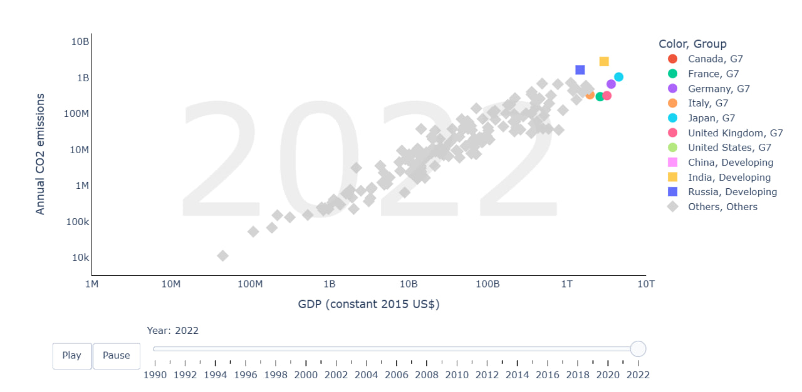

I’m interested in machine learning,
particularly its applications in the finance sector. Currently on a gap year with the intention of deepening my skills, I'm working on personal projects
such as exploring algorithms that help optimise portfolio construction and price prediction. I’m proficient
in Python and have experience with SQL, C, Excel, VBA, CSS, JavaScript, HTML, and Tableau.
I love travelling and capturing moments through photos, postcards, and videos. I especially enjoy making vintage-style
montages that evoke nostalgia and bring memories to life. Do check out my postcard
collection here!
Developed a multi-class logistic regression model (one-vs-all strategy)
and Bag-of-Words features to predict food preferences, optimized with
mini-batch SGD and feature selection of the top 10 most frequent words.
Results: 0.846 test accuracy, 0.409 test loss
Designed Convolutional Neural Networks (CNNs) and Long Short-Term Memory (LSTM)
deep learning model to predict missing data in human mobility dataset
Results: MAE and Euclidean Distance hovered around 3 with improved performance as data size increased
Together with a team, built and evaluated and compared the results
(computational costs and accuracy) of TF-IDF,
Neural Collaborative Filtering (NCF), Weighted Hybrid,
Deep Neural Network models
Findings: NCF had the best performance across
the evaluation metrics used.
Compared Random Forest, Logistic Regression, kNN, and Bagging Classifier models
in predicting early or late-stage liver cirrhosis.
Results: Random Forest had the best performance with 71.5% accuracy
Accessed the validity of EMH, CAPM and FF3 during the 2008 Global Financial Crisis
using GARCH model and Ljung-Box test.
Data: historical closing price from S&P 500.
Findings: While EMH held prior to the crisis, both EMH and CAPM did not
hold during the periods of high volatility.
Compared these investment strategies based on their
returns under varying market conditions using the
Straits Times Index Exchange Traded Fund (STI ETF).
Findings: Lump Sum performs better in bullish markets,
while DCA is more effective in bearish or volatile
conditions—especially for risk-averse investors.
A data visualization project exploring the possibility of sustainable economic growth.
